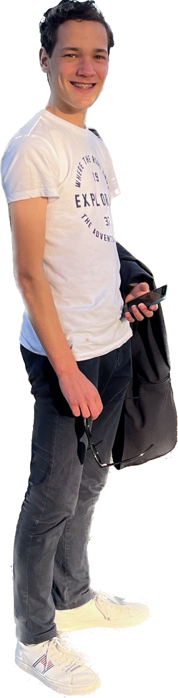
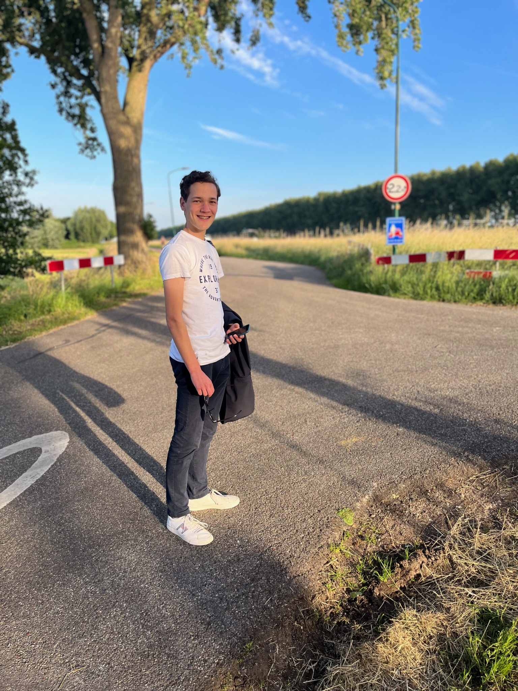

Olivier
 Welkom op mijn website. Ik heb deze website gemaakt voor een praktische opdracht van informatica. Deze website gaat over mij, Olivier Wittop Koning. Ik zit op het Niftarlake College in A4A. Op deze website kan je meer over mij te weten komen zoals wie ik ben, wat ik kan en mijn helden. Ik vertel veel op deze website en ik ben licht dyslectisch dus misschien zitten er typefouten in of andere spellingsfouten, als je deze ziet neem dan vooral contact met mij op. Je kan ook contact opnemen met mij door gebruik te maken van het contactformulier. Let wel op dit contact is via e-mail.